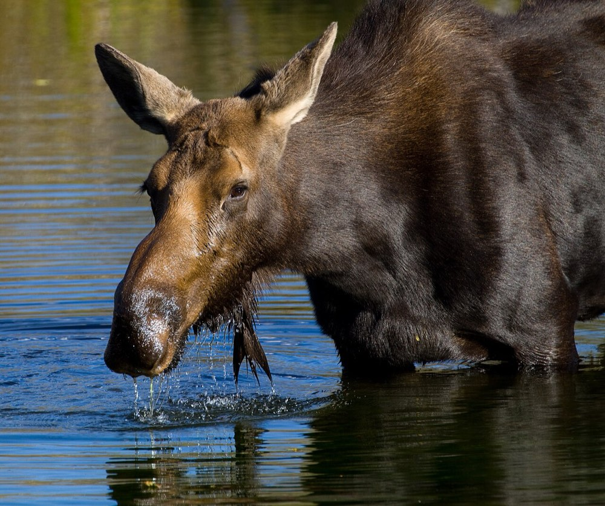
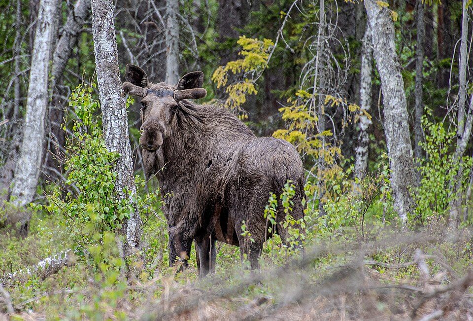

Moose
Alces alces


- Kind
- mammal · Cervidae
- Native to Vermont
- yes
- Legal status
- Fully protected by law in 1896; hunting now only by special random-draw license in WMU E under the 2020-2030 Big Game Management Plan (checked 2026-10-30)
Names
Moose, Alces alces. Vermont's largest wild animal: adults stand 6 feet or more at the shoulder and weigh 600 to 1,200 pounds.
Range and habitat
About three-quarters of the state; best habitat in the Northeast Highlands and along the Green Mountain spine. About 2,000 animals, roughly half in Essex County. Seasonal home ranges of 4 to 10 square miles (8 to 16 square miles over the year), not territorial. Moose are semi-aquatic and need ponds, bogs and stream habitat for food and to keep cool in summer. Summer: lowland softwood forests and beaver ponds. Fall: hardwoods near softwood cover. Winter: softwood shelter, mostly above 1,000 feet; clearcuts are used year-round and can give winter food.
How to identify (by season; look-alikes and the key difference)
Hard to confuse with anything else in Vermont; the sources give size only.
Through the year
Dates are typical for Vermont and shift with elevation and year; "approximate" means the source gave a season and the dates are a translation of it.
| When | What | Look for | What to do | Dates |
|---|---|---|---|---|
| May 15 to Jun 5 | young (watch) | Calves are born mid-May to early June (VFWD: mid- to late May). Just before calving, pregnant cows drive off last year's calves. | stated | |
| Sep 15 to Oct 15 | rut (watch) | Bulls thrash trees and shrubs with their antlers and dig and scent pits in the ground. The Landowner's Guide gives breeding as September to November. | stated | |
| Nov 20 to Dec 31 | antler-drop (watch) | Prime bulls shed their larger antlers after the rut, usually late November or December; young bulls may keep smaller antlers as late as mid-April. | stated | |
| Dec 1 to Mar 31 | sign (watch) | In winter moose strip soft bark from mountain ash and from red, mountain and striped maples; they seek softwood shelter when snow reaches about 35 inches, has a heavy crust, or in extreme cold and wind. | approximate |
Signs on the land (tracks, scat, browse, nests, holes, calls)
- Browse: new leaves and twig growth of trees and shrubs; in winter, soft bark stripped from mountain ash and red, mountain and striped maples.
- Rubbing: during the rut, bulls thrash trees and shrubs with their antlers.
- Pits: bulls dig pits, urinate in them and spread the scent.
- Mineral licks: soil at salt licks, including roadside licks where road salt collects.
Role in the forest (what it eats, what eats it, what it needs)
Mainly a browser, eating new leaves and twigs, plus water plants (it can dive up to 18 feet for food) and some grasses. The main known non-hunting cause of death is vehicle collisions (67 percent of reported deaths since 1980); suspected brainworm accounts for 8 percent. Winter ticks feed on moose from fall through winter.
What helps it thrive (light, soil, shelter, food and the trees it uses)
- A mix of ages and covers (the Guide's optimum): about 40 percent feeding grounds (regenerating forest under 20 years old), 10 percent winter cover (spruce and fir stands over 20 years old), 40 percent hardwood or mixed forest over 20 years old (food and cover) and 10 percent wetlands for summer feeding and cooling; it believes this can support about five moose per square mile.
- Water and shade in summer: moose can overheat and need dense shade or water; ponds also let them escape biting insects and predators. Lowland softwood forests, beaver ponds and shallow waters are favorite spring and summer places; upland hardwood or mixed forests in fall and winter, where young forest and recent cuts give abundant browse.
- Practices the Guide gives: keep 10 to 20 percent of moose range in regenerating forest up to 20 years old; keep square clearcuts to 10 acres or less, or other shapes under 200 yards wide, because moose stay near cover and use the interior of large cuts little; keep softwood winter shelter at 5 to 15 percent of the home range, in stands of at least 10 acres with a moderately dense canopy and trees at least 35 feet tall, next to regenerating forest and above about 1,000 feet; protect shallow wetlands such as beaver ponds.
- A limit: when moose densities exceeded three per square mile in the Northeast Kingdom, heavy browsing caused widespread damage to regenerating forests, which also hurt other wildlife. See Winter Tick for the parasite that kills many calves.
Managing for it (habitat practices) and living with it (conflicts and damage)
- The department says a lack of young forest habitat limits moose statewide.
- Landowner guidelines (the Guide): keep 10 to 20 percent of moose range in regenerating forest (trees up to 20 years); square clearcuts no larger than 10 acres, or irregular or rectangular cuts under 200 yards wide, because moose stay near cover; keep softwood winter shelter on 5 to 15 percent of a moose's range, in stands of at least 10 acres with a moderately dense canopy and trees at least 35 feet tall, next to browse; protect shallow wetlands such as beaver ponds.
- Too many moose: densities above three per square mile caused widespread damage to regenerating forests in the Northeast Kingdom. The Guide says densities should not exceed two per square mile, and surveys find fewer than one per square mile more acceptable.
- Conflicts: vehicle collisions, damage to livestock fencing and to maple sap tubing.
Legal status
Given complete legal protection in 1896. Modern management began with a 1992 plan, updated in 1998 and 2010. Hunting now needs a special license drawn at random, limited by area and number; it occurs only in WMU E, where winter ticks are a concern.
Sources
- Vermont Fish & Wildlife Department, moose: https://vtfishandwildlife.com/learn-more/vermont-critters/mammals/moose
- Vermont Fish & Wildlife Department, A Landowner's Guide (complete PDF): chapter 19, Moose: https://vtfishandwildlife.com/sites/fishandwildlife/files/documents/Learn%20More/LandownersGuide/Landowner-Guide-Complete.pdf
- Vermont Fish & Wildlife Department, A Landowner's Guide, Wildlife Habitat Management for Lands in Vermont, chapter 19 (Moose): https://vtfishandwildlife.com/sites/fishandwildlife/files/documents/Learn%20More/LandownersGuide/Landowner-Guide-Complete.pdf
Vermont Woodland Owner's Reference, built 2026-11-11. Rules and dates here are summaries, not legal advice; dates shift with elevation and year. Photo and recording credits · The text is by Loop Works, CC BY 4.0 (pictures and recordings keep their own licenses)